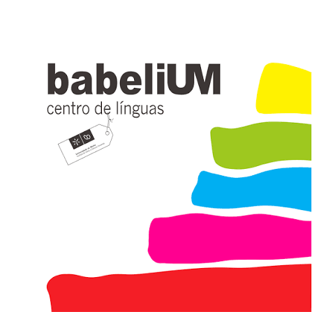

Clica numa secção para expandir
Sobre mim ▸
Experiência Profissional ▸
Analista de dados & Business intelligence Trainee
XPERTGO, Ponte de Lima
· Abril 2026 — Presente
Dashboards Power BI para OpEx e eficiência industrial; automação de SQL e DAX com apoio de IA generativa.
▸
Analista de dados & Business intelligence Trainee
Dashboards Power BI para OpEx e eficiência industrial; automação de SQL e DAX com apoio de IA generativa.
- Desenvolvimento de Dashboards de Business Intelligence (BI): Criação e implementação de painéis em Power BI para monitorização cross-functional de operações industriais, focados na otimização de custos operacionais (OpEx), eficiência global de processos e indicadores de performance interdepartamentais.
- Modelagem de Dados e Engenharia de Funcionalidades: Implementação de lógicas de Drill-Down e Root Cause Analysis (Análise de Causa-Raiz) para diagnóstico preciso de falhas operacionais.
- Data Mining e Extração de Dados Relacionais: Manipulação e consulta de bases de dados Microsoft SQL Server utilizando DBeaver e ambientes integrados (IDE) em VS Code.
- AI-Assisted Development (Desenvolvimento Assistido por IA): Utilização estratégica de inteligência artificial generativa (Claude 3.5 Sonnet, da Anthropic) para otimização de consultas SQL complexas, automação de scripts e Engenharia de Prompts voltada para lógica DAX avançada.
- Definição de Métricas de Negócio e KPIs Industriais: Alinhamento de análise exploratória de dados (EDA) com os objetivos estratégicos da organização, quebrando silos de informação entre diferentes secções industriais.
Gestor de cliente e de Projeto
BRAMP - Metais e polímeros de Braga, Lda.
· Março 2024 - Novembro 2025
Gestão estratégica de carteira de clientes do setor automóvel, garantindo o cumprimento de SLA's e KPI's de projeto.
▸
Gestor de cliente e de Projeto
Gestão estratégica de carteira de clientes do setor automóvel, garantindo o cumprimento de SLA's e KPI's de projeto.
- Acompanhamento técnico e desenvolvimento de novos projetos (desde adjudicação, estudo DFM, construção de molde, PPAP e lançamento para a fábrica, com foco também na otimização de fluxo produtivo).
- Análise e monitorização de faturação e revisão de preços, utilizando ferramentas de suporte para garantir a rentabolidade em todas as fases de vida do projeto.
- Elaboração de cotações e orçamentos detalhados, baseando em análise de custos e viabilidade técnica (injeção/moldes).
Técnico controlo de qualidade
BRAMP - Metais e polímeros de Braga, Lda.
· Janeiro 2022 a Fevereiro 2024
Gestão e implementação do manual de qualidade da unidade, e segurança no trabalho
▸
Técnico controlo de qualidade
Gestão e implementação do manual de qualidade da unidade, e segurança no trabalho
- Assegurar a conformidade com padrões internacionais de qualidade (CoC, global GAP, HACCP), e legislação em vigor.
- Análise técnica e avaliação de parâmetros de qualidade para categorização e seleção de pequenos frutos (framboesas, mirtilos e amoras) na receção.
- Coordenação logística e otimização do fluxo de expedição, garantindo a satisfação do cliente através de gestão proativa de reclamações e resolução de não-conformidades junto de produtores e parceiros.
- Participação no acompanhamento de auditorias de certificação, clientes, inspeções ACT, assegurando o cumprimento integral dos normativos de segurança e qualidade.
Engenheiro de Processos
Avisabor - Grupo Lusiaves
· 2020 e 2021
Gestão integral pela linha de abate de frango, desde a descarga de camiões de frango vivo, cais, pendura, sangria, depena e evisceração
▸
Engenheiro de Processos
Gestão integral pela linha de abate de frango, desde a descarga de camiões de frango vivo, cais, pendura, sangria, depena e evisceração
- Liderança e gestão operacional de uma equipa de 50 pessoas e 3 chefias intermédias, focada na maximização da produtividade e eficiência dos postos de trabalho.
- Monitorização e otimização de KPIs de produção (rendimentos, qualidade e tempos de paragem), usando análise de desvios p/ implementar melhorias imediatas no fluxo linha.
- Deteção proativa de anomalias e identificação de oportunidades de melhoria em mais de 30 equipamentos industriais, assegurando a continuidade e conformidade do produto final.
- Garantir o cumprimento rigoroso das normas de Higiene e segurança alimentar (HACCP) e bem-estar animal (WelFair) em total conformidade com a legislação nacional e europeia em vigor.
Lado B ▸
Socorrista
Cruz Vermelha Portuguesa
· desde Agosto 2019
+400 emergências, 2000h de serviço pré-hospitalar.
▸
Socorrista
+400 emergências, 2000h de serviço pré-hospitalar.
- Integrado semanalmente em equipas de socorro pré-hospitalar, transporte de doentes e operações de comando, contabilizando mais de 400 emergências realizadas e 2000 horas de serviço.
- Apoio em eventos de caris social e no âmbito da proteção civil (festividades, provas desportivas, combate a incêndios e COVID-19).
Explicador/professor
Santa Casa da Misericórdia de Amares
· desde Setembro 2025
Apoio pedagógico em Matemática, Física, Química, Biologia e Inglês (10º–12º anos).
▸
Explicador/professor
Apoio pedagógico em Matemática, Física, Química, Biologia e Inglês (10º–12º anos).
- Apoio pedagógico e explicações de Matemática A, Física e Química, Biologia e Geologia, e Inglês, a alunos do 10º, 11º e 12º anos.
Presidente da Direção
Núcleo de Estudos de Engenharia Biológica
· 2018
Liderança de equipa de 28 elementos em atividades para 250 alunos do curso.
▸
Presidente da Direção
Liderança de equipa de 28 elementos em atividades para 250 alunos do curso.
- Liderança de uma equipa de 28 elementos na organização de atividades de âmbito pedagógico, empreendedorismo, recreativo e desportivo, para os 250 alunos do curso, e na colaboração com outras associações.
Formação Académica ▸
Reconversão de carreira para Data Analytics
Tokyo School, Braga
· 2025 — 2026
Programa focado na transição de competências de Engenharia para a Ciência de Dados, capacitando a extração de valor e insights preditivos a partir de ecossistemas complexos.
▸
Reconversão de carreira para Data Analytics
Programa focado na transição de competências de Engenharia para a Ciência de Dados, capacitando a extração de valor e insights preditivos a partir de ecossistemas complexos.
- Análise de dados avançada: Limpeza, manipulação, e análise exploratória de grandes volumes de dados usando Python (Pandas, NumPy).
- Business Intelligence: Desenvolvimento de dashboards dinâmicos e intuitivos em Power BI e Tableau para suporte à decisão estratégica.
- Machine Learning: Aplicação de algoritmos de aprendizagem automática para modelos preditivos e análise de tendências.
- SQL: Domínio da linguagem SQL para extração e estruturação de dados.
- SCRUM: Aplicação de metodologias ágeis para gestão eficiente de projetos de dados, garantindo entregas iterativas e adaptabilidade.
- Empreendedorismo: Desenvolvimento de visão de negócio para identificar oportunidades de monetização de dados e criação de soluções disruptivas.
Mestrado Integrado em Engenharia Biológica | Ramo tecnologia química e alimentar
Universidade do Minho, Braga
· 2014 — 2019
Média de 16,2 valores. Premiado com bolsa de excelência de 2015 a 2018, pelo melhor desempenho na turma.
▸
Mestrado Integrado em Engenharia Biológica | Ramo tecnologia química e alimentar
Média de 16,2 valores. Premiado com bolsa de excelência de 2015 a 2018, pelo melhor desempenho na turma.
- Engenharia de processo: controlo e instrumentação, otimização, fenómenos de transferência, gestão de stocks, processos de separação, termodinâmica e serviços industriais.
- Engenharia das fermentações, enzimática, reações e bioquímica económica.
- Ciência e engenharia dos alimentos.
- Higiene e segurança alimentar: BRC Food, FSSC 22000, IFS Food, aplicação HACCP.
- Elementos de Qualidade e Fiabilidade: ISO 9000, SPC, ferramentas da qualidade
- Higiene e segurança no trabalho.
Certificações ▸
Python Essentials 2
Cisco Network Academy
· 2026
Módulo avançado de Python: estruturas de dados, exceções, módulos e programação orientada a objetos.
▸
Python Essentials 2
Módulo avançado de Python: estruturas de dados, exceções, módulos e programação orientada a objetos.
- Aprofundamento de conceitos de Python além do nível introdutório, com foco em boas práticas de programação orientada a objetos e tratamento de exceções.

Inglês nível B2 (48h)
Centro de Línguas BabeliUM
· 2018
Nível B2 do Quadro Europeu Comum de Referência para Línguas, em compreensão e produção escrita e oral.
▸

Inglês nível B2 (48h)
Nível B2 do Quadro Europeu Comum de Referência para Línguas, em compreensão e produção escrita e oral.
- 48 horas de formação, com avaliação de competências de leitura, escrita, compreensão e produção oral em contexto profissional e académico.
Certificado de Competências Pedagógicas, CCP (90h)
IEFP
· 2018
Certificado de Competências Pedagógicas para formadores. Código credencial F682286/2019.
▸
Certificado de Competências Pedagógicas, CCP (90h)
Certificado de Competências Pedagógicas para formadores. Código credencial F682286/2019.
- Formação de 90 horas, habilitando para o exercício de funções de formador em contexto de formação profissional certificada.
Tripulante de Ambulância + Operador DAE (80h)
Cruz Vermelha Portuguesa de Amares
· 2019 e 2024
Formação de 80h em transporte de doentes e utilização de Desfibrilhador Automático Externo (DAE).
▸
Tripulante de Ambulância + Operador DAE (80h)
Formação de 80h em transporte de doentes e utilização de Desfibrilhador Automático Externo (DAE).
- Habilitação para transporte de doentes em ambulância e operação de Desfibrilhador Automático Externo (DAE) em contexto de emergência pré-hospitalar.